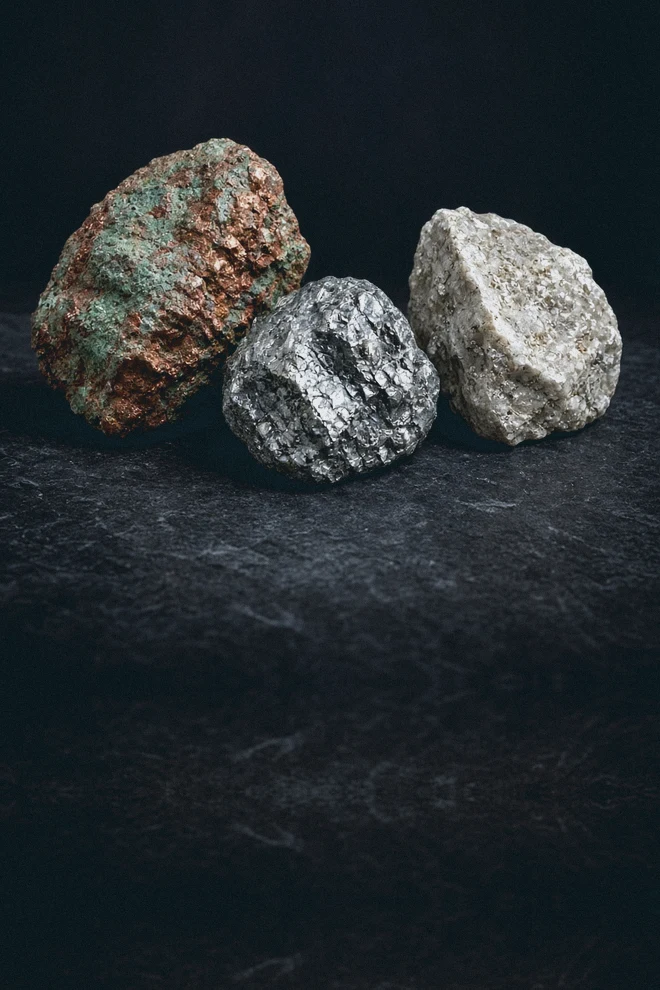

Produktet
Kobber, molybdæn, sølv og zink. Tía María er et projekt.
Driver minedrift i Peru og Mexico. Selskabet skriver, at de vigtigste produkter er kobber, molybdæn, sølv og zink. Siden om Tía María skriver, at det er et kobberprojekt i Arequipa, ikke en mine i drift.

Kobber, molybdæn, sølv og zink. Tía María er et projekt.
Industrikunder.
Kobber i drift. Tía María i Arequipa er et projekt, ikke en mine i drift.
Selskabets produktbeskrivelse ↗ · gennemgået
Virksomhedsbeskrivelse gennemgået 2026-10-15. Læs selskabets egen beskrivelse ↗
Hvor i udviklingen er forretningen? Se virksomhedens faser →
Henter den seneste validerede Azure-rapport…